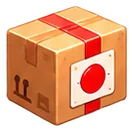
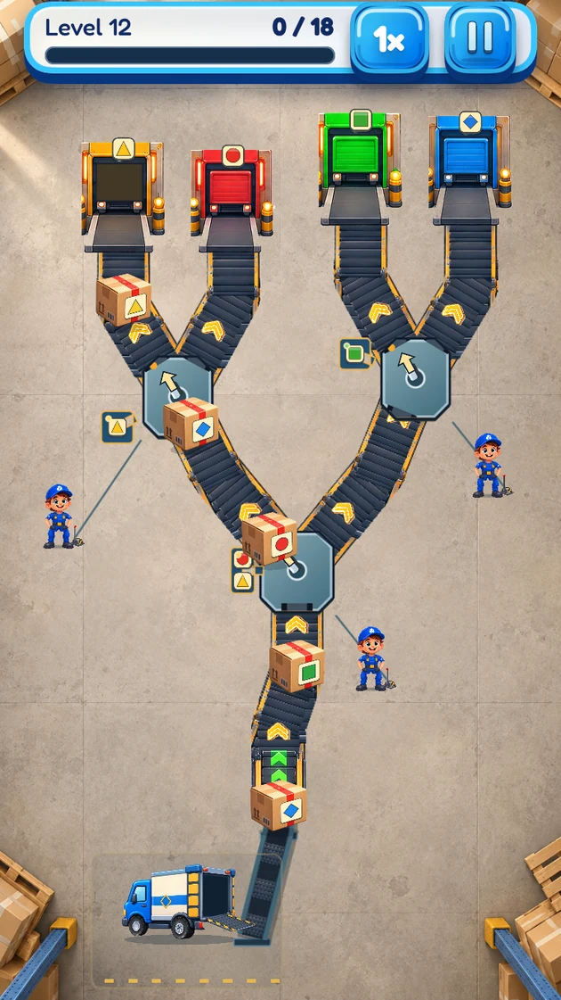
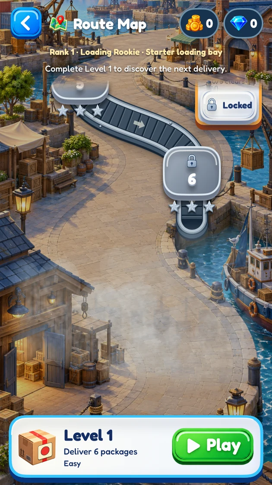
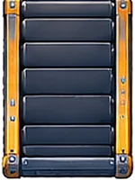
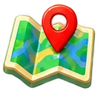

A conveyor puzzle with a little character
Every parcel.
The right route.
A busy warehouse. Colorful parcels. And you, keeping it all moving. Tap the junctions, plan your next move, and turn a tangle of conveyors into a perfect delivery.
For iPhone · iOS 17 or later
Game interface in English
good timing

Inside Cratewick
A little planning.
A perfect delivery.
Actual game screens. Route parcels on the conveyors, then find your next level on the campaign map. Tap either image for a closer look.




Your next delivery starts here
One tap.
A better route.
Easy to pick up. Satisfying to get right. Look ahead as parcels arrive, then make your move at just the right moment.
- 01
Read the colors
Every parcel has a destination. Follow its color to the matching exit before deciding which way to send it.
- 02

Time your taps
Tap a junction to change the route. The parcels keep moving, so a little planning goes a long way.
- 03
Go for three stars
Find a rhythm, finish the level, then come back to sharpen your timing and aim for all three stars.
Welcome to the warehouse
Small parcels.
Plenty to figure out.
Follow the campaign through increasingly intricate conveyor layouts. New routes ask you to look further ahead, keep track of the colors, and make every delivery count.
A satisfying little challenge, one delivery at a time.

Your route, one level at a time
Continue your campaign or revisit a completed level. A familiar layout can become a fresh challenge when you are chasing a cleaner run.
A fresh Daily Dispatch
Step into the daily delivery challenge for a change of pace. Daily Dispatch rolls over at midnight UTC.
We are here to help
A parcel stuck?
Let’s get you moving.
Biraz karakter, bolca bulmaca
Her paket
doğru yola.
Hareketli bir depo. Rengârenk paketler. Ve hepsini yolunda tutan sen. Kavşaklara dokun, sıradaki hamleni planla; karmaşık bantlardan kusursuz teslimatlar çıkar.
iPhone için · iOS 17 veya sonrası
Oyun arayüzü İngilizcedir
doğru teslimat
Oyunun içinden
Her yolun
bir çözümü var.
Gerçek oyun ekranları. Paketleri bantlarda yönlendir, sefer haritasında sıradaki bölümünü seç. Görüntüleri büyütmek için dokun.
Sıradaki teslimat burada başlıyor
Bir dokunuş.
Doğru bir rota.
Başlaması kolay, doğru hamleyi bulması keyifli. Yaklaşan paketleri takip et; tam zamanında harekete geç.
- 01
Renkleri takip et
Her paketin bir hedefi var. Hangi yöne göndereceğine karar vermeden önce rengiyle eşleşen çıkışı bul.
- 02
Zamanında dokun
Yolu değiştirmek için kavşağa dokun. Paketler ilerlemeye devam eder; biraz önden düşünmek çok işe yarar.
- 03
Üç yıldızı hedefle
Ritmini bul, bölümü tamamla; sonra zamanlamanı geliştirmek ve üç yıldızı almak için yeniden oyna.
Depoya hoş geldin
Küçük paketler.
Kocaman bulmacalar.
Giderek karmaşıklaşan bant düzenleriyle sefer haritasında ilerle. Yeni rotalarda birkaç adım sonrasını düşün, renkleri gözden kaçırma ve her paketi hedefine ulaştır.
Her teslimatta yeni bir çözümün keyfini çıkar.
Her bölümde yeni bir rota
Seferine devam et ya da tamamladığın bir bölüme dön. Daha iyi bir sonuç hedeflediğinde, tanıdık bir düzen bile yeni bir bulmacaya dönüşür.
Günün Daily Dispatch görevi
Günlük teslimat görevine katıl, ritmini değiştir. Daily Dispatch, UTC saatine göre her gece yarısı yenilenir.
Yardıma hazırız